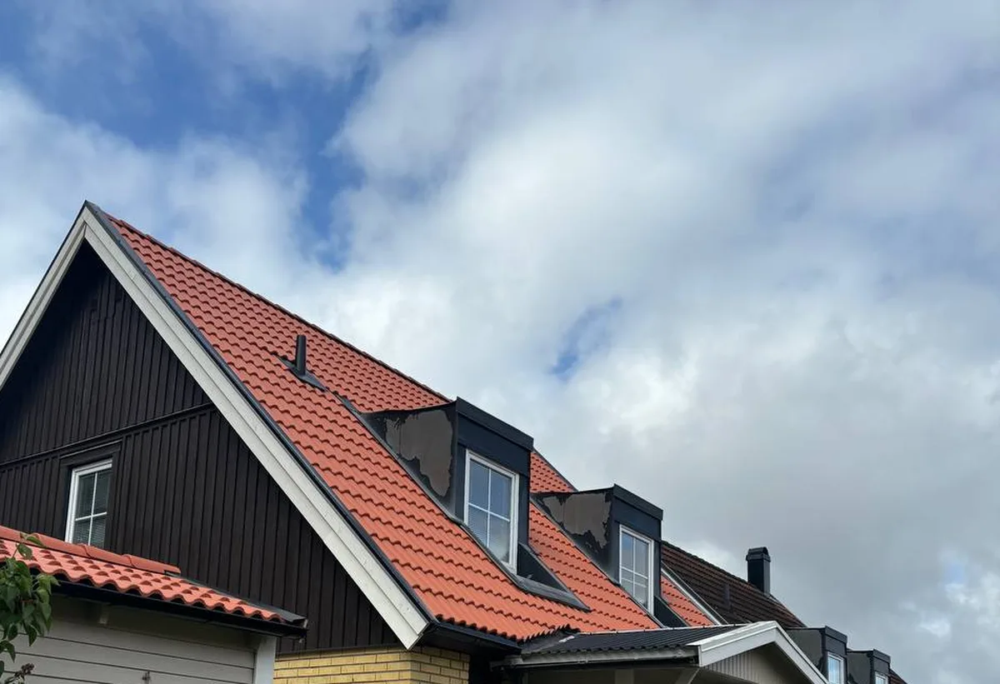

Taket och området
Vid besöket ser vi vilken hustyp du har och om området finns med bland kommunens särskilt värdefulla miljöer.
I Upplands Väsby gäller en takrenovering oftast ett radhus eller kedjehus från 1950–70-talet med tegel, betongpannor eller flackt papptak, eller en äldre villa i Väsby villastad eller Bollstanäs. Vi lägger nytt underlag, ny läkt och ny plåt och tar hänsyn till att flera av områdena är utpekade som särskilt värdefulla i kommunens nya kulturmiljöunderlag.
Kommunens kunskapsunderlag för kulturmiljö från 2025 bygger vidare på kulturmiljöprogrammet från 1988 och beskriver småhusen i tydliga lager. Det äldsta är Väsby villastad, där en stadsplan togs fram 1910 över mark som hörde till Vilunda herrgård och där faluröda villor från tiden kring 1900–1910 präglar området. Vid Gamla vägen i Bollstanäs finns egnahem från samma tid, och Runby egnahemsområde räknas också till de äldre villaområdena från före 1960.
Nästa lager är 1940–50-talet. Radhusen och villorna längs Oxundavägen byggdes 1947 och 1958, och kedjehusområdet Ägget i Runby uppfördes 1957–61 med ett hundratal kedjehus i fyra hustyper.
De östra kommundelarna växte sedan med radhus, kedjehus och atriumhus från 1960–70-talet, till exempel i Sjukyrkoberget, Skälby, Fresta och Odenslunda. Skälby, byggt 1965, är ett område med vinkelradhus i en våning och egna atriumgårdar.

Underlaget beskriver taken ovanligt noga. Radhusen vid Vinkelvägen har branta sadeltak med enkupigt lertegel och rader av små plåtkupor, medan längorna vid Lagmansvägen har svarta pannor. I Ägget var de högre kedjehusen ursprungligen täckta med rött tvåkupigt lertegel, men flera har i dag betongpannor, och de låga husen i mitten har flacka sadeltak med papp.
I Skälby var taken från början täckta med papp, med en lutning som skiftar mellan lutande och platt. I Bollstanäs skiftar takmaterialet mellan papp, plåt och tegel. Det som slits är därför olika: på tegeltaken underlaget och plåten kring kupor och skorstenar, på papptaken tätskiktet och takfoten där vatten blir stående.
Väsby villastad och stationsområdet ligger i dalgången där Väsbyån rinner mellan Oxundasjön och Edssjön, och Oxundavägen ligger i en smal dal mellan två bergsryggar. Gamla vägen i Bollstanäs går på en höjd längs en bergsslänt som sluttar ner mot Norrviken, med äldre tallar och ekar på tomterna.
Hus i dalar och under stora träd får mer skugga, barr och fukt på taket än hus på öppen mark, och på flacka papptak blir löv och barr gärna liggande. Vi rensar därför avvattningen i samma arbete och ser över om mossa har trängt in under pannorna.
Sedan den 1 december 2025 krävs normalt inget bygglov för att byta taktäckningsmaterial eller kulör på en- och tvåbostadshus, enligt Boverket. Upplands Väsby skriver på sidan om fasadändring att lov ändå kan krävas om byggnaden eller området är särskilt värdefullt och ändringen påverkar karaktären, och att utökad lovplikt i detaljplan eller områdesbestämmelser gäller. Höjs taket kan det räknas som tillbyggnad, så stäm av med kommunen innan takets form eller höjd ändras.
Ägget, Oxundavägen, Skälby, Bollstanäs – Gamla vägen och Väsby villastad bedöms i underlaget som särskilt värdefulla bebyggelseområden enligt PBL 8 kap 13 §. För Ägget ska taklandskapet bibehållas enligt vägledningen, och vid Vinkelvägen pekas rytmen av takkupor och skorstenar ut som värdefull. Kommunen skriver också på sidan om kulturhistoriska byggnader att särskilt värdefull bebyggelse inte får förvanskas, även när en åtgärd inte kräver lov.
En lokal särregel gäller solceller. Eftersom hela kommunen ligger inom Försvarsmaktens påverkansområde för väderradar krävs enligt kommunen bygglov för solcellsanläggningar i alla detaljplanerade delar. Planerar du solceller i samband med takrenoveringen behöver du alltså räkna med en ansökan.
På ett tegeltäckt radhus eller kedjehus tar vi ner pannorna, river papp och läkt, lagar råsponten och lägger nytt underlag och ny läkt. Hela lertegelpannor läggs tillbaka, och kupornas plåt, skorstenarnas beslag, fotplåt och vindskivor görs om. Vill du gå tillbaka från betongpannor till lertegel i ett område som Ägget går vi igenom vad underlaget säger innan du bestämmer; jämför också tegel, betong och plåt.
På de flacka papptaken i Skälby och Ägget lägger vi nytt tätskikt, gör om takfoten och ser till att vinden ventileras; mer finns under platta och låglutande tak. Hängrännor och stuprör byts när de är lika gamla som taket. Hur vi arbetar i kommunen beskrivs på sidan om takläggare i Upplands Väsby, och metoden i stort under takrenovering.
Vid besöket ser vi vilken hustyp du har och om området finns med bland kommunens särskilt värdefulla miljöer.
Vi går igenom om befintligt tegel kan läggas tillbaka, om betongpannor ska bytas eller om papptaket behöver nytt tätskikt.
Ska solceller upp planerar vi takarbetet så att bygglovsansökan hinner hanteras.
Gammal papp och läkt tas bort, råsponten lagas och nytt underlag läggs.
Plåten kring kupor och skorstenar görs om, och takfoten ventileras och förses med ny fotplåt.
Pannor eller papp läggs, rännor och stuprör monteras och vi går igenom taket med dig.
Rotavdraget är 30 procent av arbetskostnaden, högst 50 000 kr per person och år, och ROT och RUT får tillsammans uppgå till högst 75 000 kr. Material och resor ger inget avdrag, och vi drar av beloppet direkt på fakturan. Är ni två som äger huset kan ni dela på avdraget, enligt Skatteverket.
I kedjehusområden som Ägget och i radhusen i Skälby gör varje ägare avdraget för sitt eget hus, även när grannarna renoverar samtidigt. Hyr du ditt radhus, som i hyresradhusen i Smedby, är det i stället fastighetsägaren som beställer arbetet. Läs mer om ROT-avdrag för takarbete.
Vad en takrenovering i Upplands Väsby kostar beror främst på takets typ. Ett brant tegeltak med kupor och skorstenar kräver mer plåtarbete än ett flackt papptak, och kan teglet läggas tillbaka blir materialbehovet mindre. Om solceller ska monteras i samma veva påverkar det också planeringen. Läs om vad en takrenovering kostar eller gör en första beräkning i kalkylatorn.
Takbyte, besiktning och plåtarbeten.
Takläggare i Upplands Väsby →Så fungerar en omläggning.
Takrenovering och takomläggning →Det här styr priset.
Vad kostar en takrenovering? →Räkna på takytan och ROT.
Takbyte-kalkylator →Norrviken, Tureberg och Edsberg.
Takrenovering i Sollentuna →Villaområden och gårdar.
Takrenovering i Vallentuna →Jakobsberg, Viksjö och Kallhäll.
Takrenovering i Järfälla →